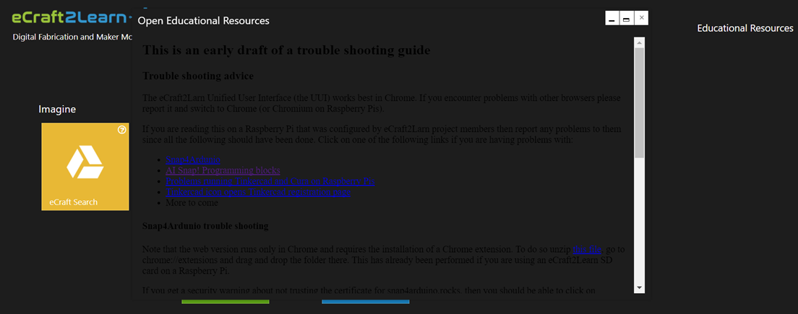

The eCraft2Larn Unified User Interface (the UUI) works best in Chrome. If you encounter problems with other browsers please report it and switch to Chrome (or Chromium on Raspberry Pis).
If you are reading this on a Raspberry Pi that was configured by eCraft2Larn project members then report any problems to them since all the following should have been done. Click on one of the following links if you are having problems with:
If Snap4Ardunio launches but cannot connect to the Arduino this is because the web version runs only in Chrome and requires the installation of a Chrome extension. To do so unzip this file, go to chrome://extensions and drag and drop the folder there. Be sure that the browser is in "Developer Mode". You'll find a switch for enabling it on the upper right corner of the chrome://extensions tab.
Setting up the Snap4Ardunio extension has already been performed if you are using an eCraft2Learn SD card on a Raspberry Pi.
*Snap4Arduino communicates with the Arduino using something called Firmata which needs to installed on the Arduino. Here are Firmata installation instructions.
If the extension is installed and Snap4Ardunio still cannot connect to the Arduino on a USB port then sometimes disconnecting and then reconnecting the USB cable resets the connection. Remember it is always a good idea when finished running Snap4Ardunio to disconnect from the Arduino.
The version of Snap4Ardunio launched by the UUI currently cannot connect to the Snap! cloud. Projects can be saved to the browser's local storage or exported to the local file system. The version of Snap4Ardunio that runs at snap4arduino.rocks does not support HTTPS which is required for the educational extensions. The Snap4Ardunio team is aware of the problem and has plans to fix it. Once they do the UUI will be changed to launch that version.
The only known problems with Tinkercad and Cura are that they are not usuable on Raspberry Pis. Tinkercad can be too slow to be useful or it may show a black rectangle in the construction area. Cura can't be run on the Raspberry Pi. If your environment has been configured with servers running these programs on VNC then launch the VNC program. Otherwise run them on a PC or Mac.
If one registers and logs into Tinkercad then the UUI can be used to launch it for 3D modelling or for circuit design. We strongly recommend that users log into Tinkercad before launching it from the UUI.b> The browser can remember the login so the same user on the same computer need only do this once.
Sometimes you might notice that the styling for the page is not loaded correctly. You can see an example such situation below:

In order to fix this issues we recommend the following: